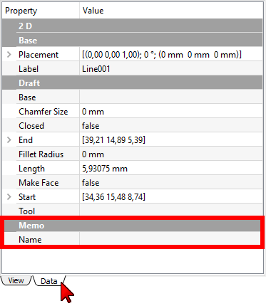

| Descrizione |
|---|
| Crea una proprietà aggiuntiva. Versione macro: 00.02 Ultima modifica: 2015-10-19 Versione FreeCAD: All Download: ToolBar Icon Autore: Mario52 |
| Autore |
| Mario52 |
| Download |
| ToolBar Icon |
| Link |
| Raccolta di macro Come installare le macro Personalizzare la toolbar |
| Versione macro |
| 00.02 |
| Data ultima modifica |
| 2015-10-19 |
| Versioni di FreeCAD |
| All |
| Scorciatoia |
| Nessuna |
| Vedere anche |
| Nessuno |
Questa macro crea una proprietà aggiuntiva (memo o altro testo) per un oggetto (funziona solo con oggetti di Draft).
Aggiunta di una proprietà Memo → Name
Avviare la macro, selezionare un oggetto di Draft, compilare i campi e applicare. Verrà creata una nuova proprietà in Vista combinata → Proprietà → Scheda Dati.

Memo.Name.Icona per la barra degli strumenti
Macro_FCPropertyMemo.FCMacro
# -*- coding: utf-8 -*-
from __future__ import unicode_literals
"""
***************************************************************************
* Copyright (c) 2015, 2016, 2017, 2018, 2019, 2020 <mario52> *
* *
* This file is a supplement to the FreeCAD CAx development system. *
* *
* This program is free software; you can redistribute it and/or modify *
* it under the terms of the GNU Lesser General Public License (LGPL) *
* as published by the Free Software Foundation; either version 2 of *
* the License, or (at your option) any later version. *
* for detail see the LICENCE text file. *
** **
* Use at your own risk. The author assumes no liability for data loss. *
* It is advised to backup your data frequently. *
* If you do not trust the software do not use it. *
** **
* This software is distributed in the hope that it will be useful, *
* but WITHOUT ANY WARRANTY; without even the implied warranty of *
* MERCHANTABILITY or FITNESS FOR A PARTICULAR PURPOSE. See the *
* GNU Library General Public License for more details. *
* *
* You should have received a copy of the GNU Library General Public *
* License along with this macro; if not, write to the Free Software *
* Foundation, Inc., 59 Temple Place, Suite 330, Boston, MA 02111-1307 *
* USA *
***************************************************************************
* WARNING! All changes in this file will be lost and *
* may cause malfunction of the program *
***************************************************************************
"""
#Macro_FCPropertyMemo 28/09/2015, 19/10/2015, 2020/05/17
#
#
#OS: Windows 10 (10.0)
#Word size of OS: 64-bit
#Word size of FreeCAD: 64-bit
#Version: 0.19.20887 (Git)
#Build type: Release
#Branch: master
#Hash: 42c56d9fef82b484448e3730eb7da69c48fe1374
#Python version: 3.6.8
#Qt version: 5.12.1
#Coin version: 4.0.0a
#OCC version: 7.3.0
#Locale: French/Mars (fr_MA)
#
#
__title__ = "Macro_FCPropertyMemo"
__author__ = "Mario52"
__url__ = "https://wiki.freecad.org/Macro_PropertyMemo"
__urlGist = "https://gist.github.com/mario52a/eafcf79703fab64b8da5"
__version__ = "00.03"
__date__ = "2020/05/17" #YYYY/MM/DD
#### Test FreeCAD.Version simple ############################################################################################################
if int(FreeCAD.Version()[1]) < 19: # Version de FreeCAD
FreeCAD.Console.PrintMessage("This version " + __title__ + " rmu work with the FreeCAD 0.19 or higher." + "\n\n")
FreeCAD.Console.PrintMessage("For the precedent version see the page " + "\n\n")
FreeCAD.Console.PrintMessage("https://gist.githubusercontent.com/mario52a/eafcf79703fab64b8da5/raw/51702c17fb4b205da52488bf2a239011bbbc9da5/Macro_FCPropertyMemo.FCMacro" + "\n\n")
#### Test FreeCAD.Version simple ############################################################################################################
import PySide2
from PySide2 import (QtWidgets, QtCore, QtGui)
from PySide2.QtWidgets import (QWidget, QApplication, QSlider, QGraphicsView, QGraphicsScene, QVBoxLayout, QStyle)
from PySide2.QtGui import (QPainter, QColor, QIcon)
from PySide2.QtSvg import *
#import Draft, Part, FreeCAD, math, PartGui, FreeCADGui, FreeCAD
global path
#path = FreeCAD.ConfigGet("AppHomePath")
path = FreeCAD.ConfigGet("UserAppData")
global title_01 ; title_01 = "Memo" # title of menu
global title_02 ; title_02 = "" # title of propriety
global memo_01 ; memo_01 = "" # memo
global forString; forString = 1 # memo for String or List
global ui ; ui = "" #
try:
_fromUtf8 = QtCore.QString.fromUtf8
except AttributeError:
def _fromUtf8(s):
return s
try:
_encoding = QtGui.QApplication.UnicodeUTF8
def _translate(context, text, disambig):
return QtGui.QApplication.translate(context, text, disambig, _encoding)
except AttributeError:
def _translate(context, text, disambig):
return QtGui.QApplication.translate(context, text, disambig)
class Ui_MainWindow(object):
def setupUi(self, MainWindow):
self.window = MainWindow
global path
global title_01
global title_02
global memo_01
##path###########################################################################
#path = FreeCAD.ConfigGet("AppHomePath")
#path = FreeCAD.ConfigGet("UserAppData")
#path = "your path"
param = FreeCAD.ParamGet("User parameter:BaseApp/Preferences/Macro")# macro path
self.path = param.GetString("MacroPath","") + "/" # macro path
self.path = self.path.replace("\\","/")
#App.Console.PrintMessage(str("Path for the icons : ") + self.path + "\n" + __title__ + " : " +__version__ + " " + __date__ + "\n")
# #################################################################################
MainWindow.setObjectName(_fromUtf8("MainWindow"))
# MainWindow.resize(260, 200)
# MainWindow.setMinimumSize(QtCore.QSize(254, 163))
# MainWindow.setMaximumSize(QtCore.QSize(254, 163))
###### Read Configuration begin ####
title_01 = FreeCAD.ParamGet("User parameter:BaseApp/Preferences/Macros/FCMmacros/" + __title__).GetString("LE_Edit_01")
title_02 = FreeCAD.ParamGet("User parameter:BaseApp/Preferences/Macros/FCMmacros/" + __title__).GetString("LE_Edit_02")
CBString = FreeCAD.ParamGet("User parameter:BaseApp/Preferences/Macros/FCMmacros/" + __title__).GetBool("CB_String")
###### Read Configuration end ####
self.centralwidget = QtWidgets.QWidget(MainWindow)
self.centralwidget.setObjectName(_fromUtf8("centralwidget"))
self.groupBox = QtWidgets.QGroupBox()
self.label_00 = QtWidgets.QLabel()
self.label_00.setAlignment(QtCore.Qt.AlignCenter)
font = QtGui.QFont()
font.setPointSize(10)
font.setBold(True)
font.setUnderline(True)
font.setWeight(80)
self.label_00.setFont(font)
self.label_01 = QtWidgets.QLabel()
self.LE_Edit_01 = QtWidgets.QLineEdit() # title property
self.LE_Edit_01.setText(_fromUtf8(title_01))
self.LE_Edit_01.textChanged.connect(self.on_LE_Edit_01_Pressed)
self.label_02 = QtWidgets.QLabel()
self.LE_Edit_02 = QtWidgets.QLineEdit() # title name
self.LE_Edit_02.setText(_fromUtf8(title_02))
self.LE_Edit_02.textChanged.connect(self.on_LE_Edit_02_Pressed) #
# self.label_03 = QtWidgets.QLabel()
# self.LE_Edit_03 = QtWidgets.QLineEdit() # memo
# self.LE_Edit_03.textChanged.connect(self.on_LE_Edit_03_Pressed) #
self.CB_String = QtWidgets.QCheckBox() # for String or List
self.CB_String.setChecked(CBString)
self.CB_String.clicked.connect(self.on_CB_String_clicked) # connect on def "on_checkBox_1_clicked"
self.PB_Help = QtWidgets.QPushButton()
self.PB_Help.setToolTip(_fromUtf8("Help on line " + __version__ + " " + __date__ + " rmu"))
self.PB_Help.setIcon(QtGui.QIcon.fromTheme("help",QtGui.QIcon(":/icons/help-browser.svg")))
self.PB_Help.clicked.connect(self.on_PB_Help) #
self.PB_Button_01 = QtWidgets.QPushButton()
self.PB_Button_01.setIcon(QtGui.QIcon.fromTheme("refresh",QtGui.QIcon(":/icons/view-refresh.svg")))
self.PB_Button_01.clicked.connect(self.on_PB_Button_01_clicked) #
self.PB_Button_02 = QtWidgets.QPushButton()
# self.PB_Button_02.setIcon(QIcon(QApplication.style().standardIcon(QStyle.SP_DialogOkButton))) #
self.PB_Button_02.setIcon(QtGui.QIcon.fromTheme("execute",QtGui.QIcon(":/icons/button_valid.svg")))
self.PB_Button_02.clicked.connect(self.on_PB_Button_02_clicked) #
self.PB_Button_03 = QtWidgets.QPushButton()
self.PB_Button_03.setIcon(QtGui.QIcon.fromTheme("close",QtGui.QIcon(":/icons/application-exit.svg")))
self.PB_Button_03.clicked.connect(self.on_PB_Button_03_clicked) #
#### Layout debut ########################
self.grid0 = QtWidgets.QGridLayout(self.centralwidget)
self.grid0.setContentsMargins(10, 10, 10, 10)
self.grid0.addWidget(self.groupBox, 0, 0, 1, 1)
self.gridLayout = QtWidgets.QGridLayout(self.groupBox)
self.gridLayout.addWidget(self.label_00, 1, 0, 1, 4)
self.gridLayout.addWidget(self.label_01, 2, 0, 1, 4)
self.gridLayout.addWidget(self.LE_Edit_01, 3, 0, 1, 4)
self.gridLayout.addWidget(self.label_02, 4, 0, 1, 2)
self.gridLayout.addWidget(self.CB_String, 4, 2, 1, 2)
self.gridLayout.addWidget(self.LE_Edit_02, 5, 0, 1, 4)
# self.gridLayout.addWidget(self.label_03, 6, 0, 1, 4)
# self.gridLayout.addWidget(self.LE_Edit_03, 7, 0, 1, 3)
self.gridLayout.addWidget(self.PB_Help, 8, 0, 1, 1)
self.gridLayout.addWidget(self.PB_Button_01, 8, 1, 1, 1)
self.gridLayout.addWidget(self.PB_Button_02, 8, 2, 1, 1)
self.gridLayout.addWidget(self.PB_Button_03, 8, 3, 1, 1)
#### Layout fin ###########################
MainWindow.setCentralWidget(self.centralwidget)
self.retranslateUi(MainWindow)
QtCore.QMetaObject.connectSlotsByName(MainWindow)
def retranslateUi(self, MainWindow):
MainWindow.setWindowFlags(PySide2.QtCore.Qt.WindowStaysOnTopHint) # PySide2 cette fonction met la fenetre en avant
MainWindow.setWindowIcon(QtGui.QIcon(_fromUtf8(self.path + "PropertyMemo.png"))) # change l'icone de la fenetre principale
_translate = QtCore.QCoreApplication.translate
MainWindow.setWindowTitle(_translate("MainWindow", "FCPropertyMemo"))
self.groupBox.setTitle(_translate("MainWindow", "ver : " + __version__ + " : " + __date__ + " (rmu)"))
self.label_00.setText(_translate("MainWindow", "FCProperty Memo"))
self.label_01.setText(_translate("MainWindow", "Property title"))
self.label_02.setText(_translate("MainWindow", "Property name"))
self.CB_String.setText(_translate("MainWindow", "UnCheck for String"))
self.LE_Edit_02.setToolTip("Title of property")
# self.label_03.setText(_translate("MainWindow", "Memo"))
# self.LE_Edit_03.setText(_fromUtf8(""))
# self.LE_Edit_03.setToolTip("Text memo")
self.PB_Help.setText(_translate("MainWindow", "Wiki"))
self.PB_Button_01.setText(_translate("MainWindow", "Reset"))
self.PB_Button_02.setText(_translate("MainWindow", "Validate"))
self.PB_Button_03.setText(_translate("MainWindow", "Quit"))
self.CB_String.setToolTip("The memo is a string by default"+"\n"+
"If the checkBox is checked the memo is a list in one window"+"\n"+
"Clic the '...' in ComboView > Data")
def on_LE_Edit_01_Pressed(self): # Line edit 01 title
global title_01
title_01 = self.LE_Edit_01.text()
# App.Console.PrintMessage(title_01+"\n")
def on_LE_Edit_02_Pressed(self): # Line edit 02 title property
global title_02
title_02 = self.LE_Edit_02.text()
# App.Console.PrintMessage(title_02+"\n")
# def on_LE_Edit_03_Pressed(self): # Line edit 03 memo
# global memo_01
# memo_01 = self.LE_Edit_03.text()
# App.Console.PrintMessage(memo_01+"\n")
def on_CB_String_clicked(self): # connection on_checkBox_1_clicked
global forString
if self.CB_String.isChecked(): # if checkbox_01 is checked then ....
forString = 1
self.CB_String.setText("UnCheck for String")
else :
forString = 0
self.CB_String.setText("Check for List")
# App.Console.PrintMessage("on_CB_String_clicked "+str(forString)+"\n")
def on_PB_Button_01_clicked(self): # Button Reset
global title_01
global title_02
global memo_01
global forString
self.LE_Edit_01.clear()
title_01 = "Memo"
self.LE_Edit_01.setText(_fromUtf8(title_01))
self.LE_Edit_02.clear()
title_02 = ""
# self.LE_Edit_03.clear()
# memo_01 = ""
self.CB_String.setChecked(True)
forString = 1
self.CB_String.setText("UnCheck for String")
# App.Console.PrintMessage("on_PB_Button_01_clicked\n")
def on_PB_Button_02_clicked(self): # Button Validate
global ui
global title_01
global title_02
global memo_01
global forString
# try:
obj = ""
obj = FreeCADGui.Selection.getSelection()[0]
op = obj.PropertiesList
pas = 0
if (title_02 != ""):
for p in op:
if str(p) == title_02:
App.Console.PrintWarning("This Property is already present"+"\n")
pas = 0
break
else :
pas = 1
if pas == 1:
if forString == 0 : # title_02 = sous titre, title_01 = titre
a = obj.addProperty("App::PropertyString",title_02, title_01, "_Memo") # create a memo string
#FreeCAD.ActiveDocument.getObject(obj.Name) = memo_01
else :
a = obj.addProperty("App::PropertyStringList",title_02, title_01, "_Memo") # Create a list in window
Gui.Selection.clearSelection(obj.Name)
Gui.Selection.addSelection(obj)
App.activeDocument().recompute()
#ui.on_PB_Button_01_clicked() # Reset
else:
App.Console.PrintMessage("Field empty"+"\n")
# except Exception:
# App.Console.PrintWarning("Object not selected or not Draft object"+"\n")
App.Console.PrintMessage("on_PB_Button_02_clicked\n")
def on_PB_Button_03_clicked(self): # Button Quit
App.Console.PrintMessage("End FCPropertyMemo"+"\n\n")
###### Write Configuration begin ####
FreeCAD.ParamGet("User parameter:BaseApp/Preferences/Macros/FCMmacros/" + __title__).SetBool("CB_String", self.CB_String.isChecked())# True or False
FreeCAD.ParamGet("User parameter:BaseApp/Preferences/Macros/FCMmacros/" + __title__).SetString("LE_Edit_01", title_01) # ""
FreeCAD.ParamGet("User parameter:BaseApp/Preferences/Macros/FCMmacros/" + __title__).SetString("LE_Edit_02", "") # title_02
###### Write Configuration end ####
self.window.hide()
def on_PB_Help(self): # Button Help
import WebGui
WebGui.openBrowser(__url__)
App.Console.PrintMessage(__url__ + "\n")
FreeCAD.ParamGet("User parameter:BaseApp/Preferences/Macros/FCMmacros/" + __title__).SetString("Version",__version__ + " (" + __date__ + ")")#
MainWindow = QtWidgets.QMainWindow()
ui = Ui_MainWindow()
ui.setupUi(MainWindow)
MainWindow.show()
La discussione nel forum Object description field
Le mie macro su Github di mario52a.
{kind=link}
{kind=link}
{kind=link}
{kind=link}
{kind=link}
{kind=link}
{kind=link}